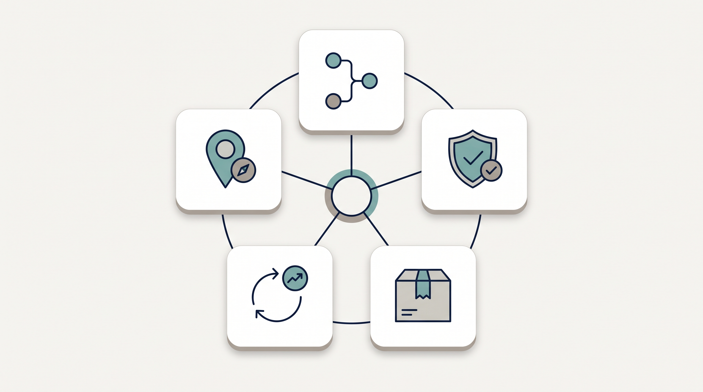
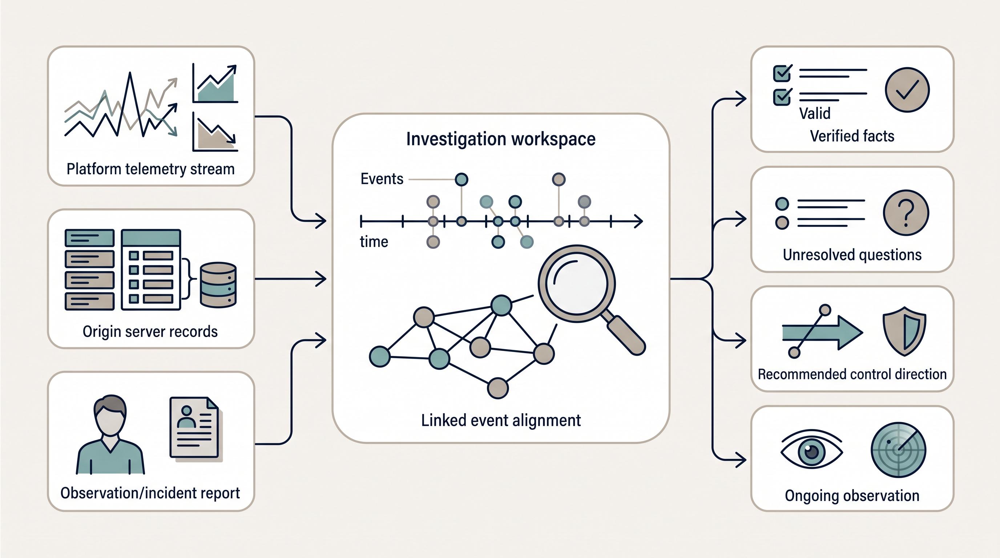
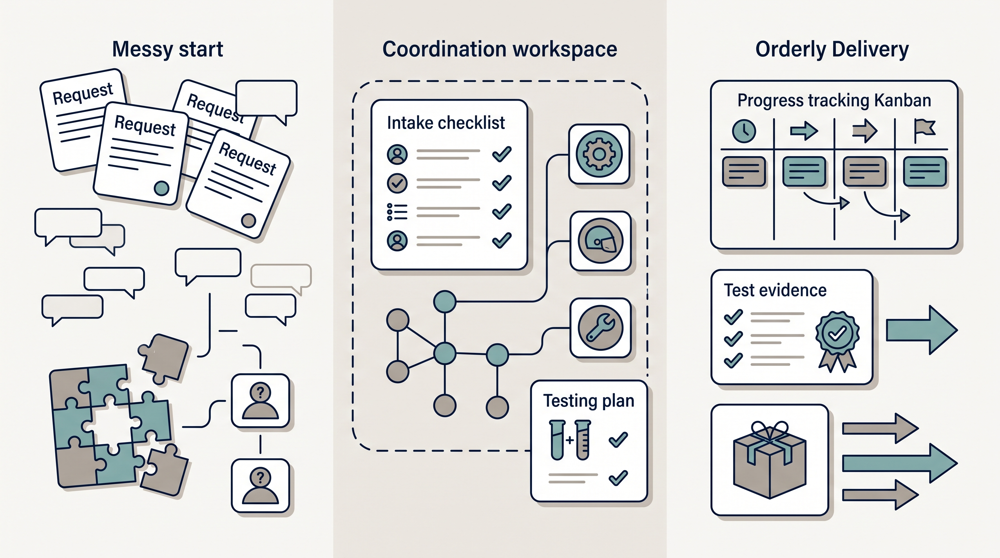
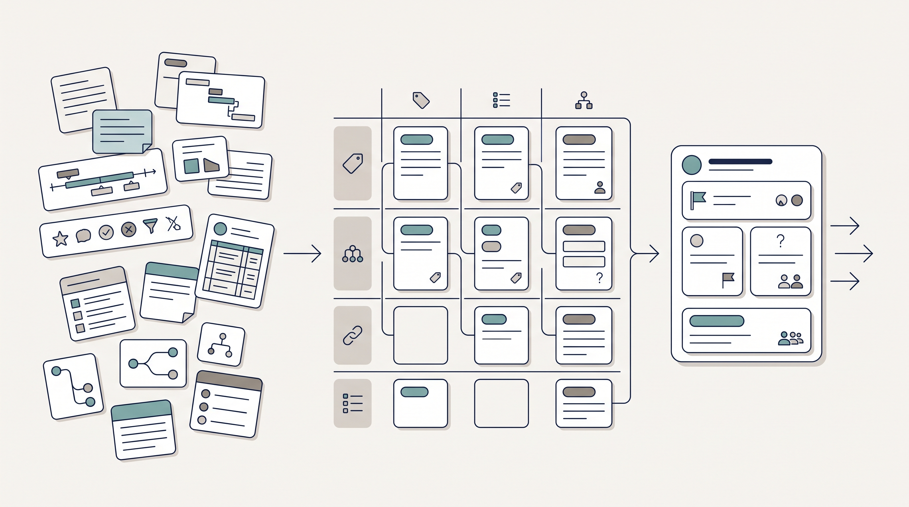

Locate the context
定位情境
Clarify the environment, constraints, points of intervention, and stakeholders.
釐清環境、限制、定位與利害關係人。
Security Delivery & Methods Portfolio
資安交付與方法論作品集
I work best when customer context is fragmented, requirements are still taking shape, and technical delivery needs to move. I turn that complexity into a shared basis for decisions, controls, handoff, and improvement.
即使面臨資訊破碎、需求未明且時程緊迫的情境，我能將複雜脈絡梳理為團隊共識，將產業風險與架構限制轉化為針對金融與製造業的市場提案，並建立清晰的決策依據、控制方向與交接標準。

Wayne's Workflow
Wayne's Workflow
Across recurring investigations, technical evaluations, data reviews, and handoffs, I identify delivery value and drive continuous improvement.
從異常調查、技術驗證、資料整理與交接等反覆出現的情境中，找出可交付的價值並持續優化。
Clarify the environment, constraints, points of intervention, and stakeholders.
釐清環境、限制、定位與利害關係人。
Visualize goals, roles, ownership, and blockers.
具象化協作斷層，明確定義技術前提、角色與責任歸屬，讓隱性的流程瓶頸無所遁形。
Turn a broad need into testable scope, controls, and observations.
把大方向收斂成可測試的範疇、控制與觀察方式。
Leave behind checklists, decision context, and usable next actions.
沉澱交付資產以確保無縫交接，將單次專案經驗轉化為標準化表單與技術文件。
Reduce repeat work without sacrificing security or delivery quality.
在維持交付品質的前提下，減少重複勞動並降低跨部門溝通成本。
Field cases
相關案例
These field cases show the working method and delivery outputs; source information has been de-identified.
以下為實務案例，呈現工作方法與交付成果；原始資訊皆已去識別化處理。

01 / Evidence correlation
01 ／訊號判讀
Platform records, origin-side records, related documents, and stakeholder observations often each describe only part of the same event. I first align their time ranges and characteristics, separate verified facts from open questions, and turn the result into a control direction and an observation plan.
面對 WAF/CDN 邊緣防護紀錄、伺服器原站日誌 (Origin Logs) 與應用層行為不一致的狀況，真正的挑戰在於各方往往基於片面訊號驟下結論。我透過對齊時間戳記與請求特徵，交叉比對異常行為，釐清盲區並建立精確的存取控制基準。

02 / POC delivery
02 ／POC 技術交付
Technical evaluations stall when scope, network prerequisites, test conditions, owners, and acceptance criteria live in separate conversations. I structure them into an intake, dependency, tracking, and handoff system, with clear RACI ownership so the team can stay synchronized on the latest information.
技術驗證的停滯，往往肇因於範疇、網路環境、測試條件及驗收標準散落於各方溝通中。我的交付原則是：確保「零脈絡」的接手者也能一目了然——目前的缺口為何、責任歸屬，以及具體的驗收標準，讓專案順利推進。

03 / Decision-ready data
03 ／決策資料判讀
Project notes, vendor responses, technical requirements, and test status are not decision-ready merely because they are collected in one place. I first define comparable dimensions—such as blocker, owner, success criteria, and next action—then connect the indicators back to their operating context.
若只是將缺乏共通標準的資料強行拼湊成表，往往只會得到「更整齊的混亂」。我會先萃取具備對齊價值的共通維度，並依據瓶頸點、責任歸屬、成功標準與下一步進行分層收斂，讓資料能實質支援決策。
Early Career
Early Career
Before moving into security work, I was the primary digital operator for a family e-commerce brand, responsible for website build and maintenance, product information, copy, visual assets, social updates, and daily operations. Alongside product and content delivery, I treated customer data with care and security in mind.
我曾在家族電商品牌擔任主要數位營運角色，負責網站建立與維護、商品資訊、文案、視覺素材與日常營運。這段直接面對營運壓力的經歷，讓我深刻體會 CIA 原則絕非抽象理論，而是維繫商業命脈的日常責任。
Read foundation notes 閱讀數位營運基礎說明Customer and order-related data should not be handled or shared casually.
客戶與訂單資料須嚴格控管，避免因作業便利而導致外流或散落。
Product details, pricing, visuals, and promotional messages need to remain correct and traceable.
商品資訊、價格與視覺內容必須維持正確且可追溯，確保對外溝通的一致性。
A website is a customer-facing operational entry point; availability affects the entire flow, not just the technology.
網站是客戶接觸品牌與完成交易的入口；可用性的中斷影響的是整體商業命脈，而不單單只是 IT 技術問題。